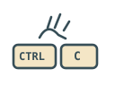

H32 / 硬件团队 · 实体展示
自追踪手势识别控制
为解决使用电脑处理文档时快捷组合键操作不便与必须接触操作的问题，构想了一个自追踪手势识别控制电脑键盘的摄像头。基于庐山派Lite完成手势识别，并和esp32串口通信实现基本信息传递，通过esp32模拟蓝牙键盘，完成对电脑基本快捷键的输入。外观即为可左右旋转的摄像头，可以主动调整位置追踪手掌，通过特定手势实现快捷键或者自定义输入的操作。

 返回硬件项目索引
返回硬件项目索引为解决使用电脑处理文档时快捷组合键操作不便与必须接触操作的问题，构想了一个自追踪手势识别控制电脑键盘的摄像头。基于庐山派Lite完成手势识别，并和esp32串口通信实现基本信息传递，通过esp32模拟蓝牙键盘，完成对电脑基本快捷键的输入。外观即为可左右旋转的摄像头，可以主动调整位置追踪手掌，通过特定手势实现快捷键或者自定义输入的操作。
